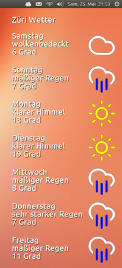

Sunshine
Dieser Artikel wurde für die folgenden Ubuntu-Versionen getestet:
Ubuntu 16.04 Xenial Xerus
Zum Verständnis dieses Artikels sind folgende Seiten hilfreich:
Sunshine  ist eine Wettervorhersage für den Linux-Desktop. In einem transparenten Fenster ohne Umrandung wird das Wetter für die nächsten sieben Tage angezeigt – wenn man einen Composite-Manager aktiviert hat. Denn ansonsten verunziert ein hässlicher schwarzer Rahmen die Wetteranzeige.
ist eine Wettervorhersage für den Linux-Desktop. In einem transparenten Fenster ohne Umrandung wird das Wetter für die nächsten sieben Tage angezeigt – wenn man einen Composite-Manager aktiviert hat. Denn ansonsten verunziert ein hässlicher schwarzer Rahmen die Wetteranzeige.
Die Wetterdaten werden von Openweathermap bezogen. Für jeden Wochentag wird eine Kurzbeschreibung des Wetters, die Temperatur und ein Symbol für das Wetter dargestellt. Sunshine wurde von Ralf Hersel in Python 3 geschrieben und steht unter der GPLv3-Lizenz .

Installation¶
Das Programm selbst ist nicht in den offiziellen Paketquellen enthalten. Ein DEB-Paket oder ein PPA gibt es auch nicht.
Manuell¶
Von der Projektseite kann ein ZIP-Archiv des Programms heruntergeladen und an beliebiger Stelle entpackt [2] werden. Nun muss man die Datei sunshine.sh ausführbar machen [3] und kann das Programm dann durch Aufruf dieses Shell-Skripts starten [4]. Bequemer geht es über einen Programmstarter [5] für Sunshine (siehe unten).
Hinweis!
Fremdsoftware kann das System gefährden.
Programmstarter erstellen¶
Um das Programm über ein Anwendungsmenü oder der Dash starten zu können, wird ein Programmstarter [5] benötigt. Dazu legt man mit Root-Rechten die Datei /usr/share/applications/sunshine.desktop an und verwendet die folgenden Zeilen als Inhalt (Achtung: die beiden Pfade müssen angepasst werden):
[Desktop Entry] Name=Sunshine Name[de]=Sunshine Comment=Weather forecast Comment[de]=Wettervorhersage Exec=/home/BENUTZER/.../sunshine/sunshine.sh Icon=/home/BENUTZER/.../sunshine/sunshine.svg Terminal=false Type=Application Categories=Utility; StartupNotify=false
Nun kann das Programm bei Ubuntu-Varianten mit einem Anwendungsmenü über "Zubehör -> Sunshine" gestartet bzw. das Startersymbol in den Unity-Launcher gezogen werden.
Alternativ kann die Anwendung nach dem Entpacken per
Alt +
F2 und dem Befehl /home/BENUTZERNAME/.../sunshine/sunshine.sh gestartet werden. Ein Rechtsklick  auf das Startersymbol enthält die Optionen zur Dash hinzufügen bzw. im Starter behalten. Beides führt dazu, dass automatisch eine .desktop-Datei unter ~/.local/share/applications/ angelegt wird. Man muss dann nur noch den Pfad zum Symbol anpassen.
auf das Startersymbol enthält die Optionen zur Dash hinzufügen bzw. im Starter behalten. Beides führt dazu, dass automatisch eine .desktop-Datei unter ~/.local/share/applications/ angelegt wird. Man muss dann nur noch den Pfad zum Symbol anpassen.
Verwendung¶
Nach dem Start holt das Programm die Wetterdaten vom Anbieter und stellt sie in einem Fenster dar. Durch einen Rechtsklick auf das Fenster wird die Anwendung geschlossen.
Sunshine bietet keine grafische Oberfläche zur Konfiguration. Alle Einstellungen erfolgen über die Konfigurationsdatei sunshine.cfg. Diese Datei muss mit einem Editor [6] geöffnet und bearbeitet werden. Alle Parameter sind (in Englisch) kommentiert und sollten selbsterklärend sein. Die folgende Tabelle zeigt, welche Einstellungen möglich sind (nicht alle Parameter dürfen verändert werden):
| Konfiguration | |
| Parameter = Beispielwert | Bedeutung |
city = Zurich | Ortsname, wie er an Openweathermap übergeben wird |
city_translated = Wetter in Zürich | Ortsname, wie er auf dem Desktop dargestellt wird |
language = de | Internationaler Ländercode  für die Übersetzung der Wetterkurzbeschreibung für die Übersetzung der Wetterkurzbeschreibung |
1 = Montag ... 7 = Sonntag | Namen der Wochentage, wie sie auf dem Desktop angezeigt werden |
pos_x = 1300 | Horizontale Position der linken/oberen Fensterecke in Pixel |
pos_y = 30 | Vertikale Position der linken/oberen Fensterecke in Pixel |
width = 340 | Breite des Fensters in Pixel |
height = 880 | Höhe des Fensters in Pixel |
bg_color = #E5E5E5 | Hintergrundfarbe des Fensters (hexadezimal), siehe Farbtabelle |
transparency = 100 | Transparenz des Fensters (0 = deckend, 100 = völlig transparent, alle Zwischenwerte möglich) |
text_color = #FFFFFF | Textfarbe (hexadezimal), siehe Farbtabelle |
font_name = ubuntu 24 | Schriftart und Schriftgröße (durch ein Leerzeichen getrennt) |
temp_unit = Grad | Name der Temperatureinheit, wie sie rechts neben dem Temperaturwert angezeigt wird |
img_x = 110 | Horizontaler Abstand des Wettersymbols vom linken Fensterrand in Pixel |
img_y = -30 | Vertikaler Abstand des Wettersymbols vom oberen Rand des Tagesnamens in Pixel |
show_city = yes | Soll der Ortsname (city_translated) oben im Fenster angezeigt werden (yes oder no) |
Die Beispielangaben zur Position und Größe des Fensters sind für eine Bildschirmgröße von 1600 x 900 geeignet.
Wie findet man den Ortsnamen?¶
Im Parameter city muss der Name des Orts angegeben werden, zu der man Wetterinformationen beziehen möchte. Nun stellt sich die Frage, wie der Ortsname lautet, der von Openweathermap akzeptiert wird. Ganz einfach, ausprobieren: im Web-Browser gibt man diese URL ein: http://api.openweathermap.org/data/2.5/weather?q=London&mode=xml und ersetzt "London" durch den gesuchten Ortsnamen. Im XML-Ergebnis dieses Aufrufs kann dann leicht überprüft werden, ob der gewünschte Ort gefunden wurde.
Abfragehäufigkeit¶
Das Projekt Openweathermap bittet darum, ihren Service nicht ständig (alle 10 Minuten) aufzurufen. Es sollte genügen, den Service beim Start des Computers (in Startprogramme aufnehmen) oder bei Bedarf aufzurufen. Zur Not hilft auch ein Blick aus dem Fenster.
 Programmübersicht
Programmübersicht- Erstellt mit Inyoka
-
 2004 – 2017 ubuntuusers.de • Einige Rechte vorbehalten
2004 – 2017 ubuntuusers.de • Einige Rechte vorbehalten
Lizenz • Kontakt • Datenschutz • Impressum • Serverstatus -
Serverhousing gespendet von